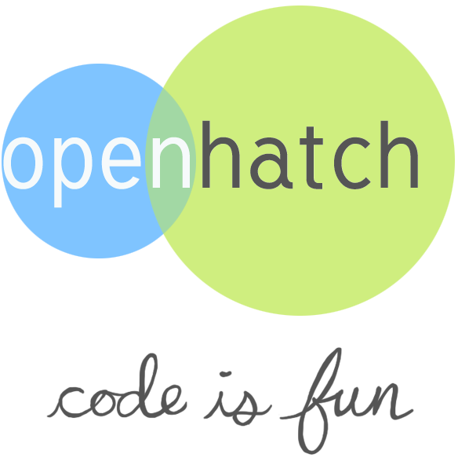

Overview
Wrapping an api means representing the data in a structured manner in a particular language.
By structured manner, we do not mean only json or xml. But rather class objects and models in python.
How does it help?
It helps extend logic in the code and build apps on top of them very easily.

Tools:
Data are usually available in xml or json

Lets start with defining a model for a user in hacker news
class User(object):
"""Represents a user in hacker news"""
def __init__(self, id, created, karma, avg, about):
self.id = id
self.created = created
self.karma = karma
self.avg = avg
self.about = about
..
# method to intialize the user
Lets define a get method which wraps the user for us.
Example url: https://news.ycombinator.com/user?id=jl
# User model ..
@classmethod
def get(self, user_id):
# scraping the data out of web
USER_URL = HACKER_NEWS_URL + "user?id={}".format(user_id)
page_html = requests.get(USER_URL).text
soup = BeautifulSoup(page_html)
form = soup.find('form', {'method': 'post', 'action': '/x'})
content = form.find('table')
tr = content.findAll('tr')
user = tr[0].findAll('td')[1].string
created = tr[1].findAll('td')[1].string
karma = int(tr[2].findAll('td')[1].string)
avg = float(tr[3].findAll('td')[1].string)
about = tr[4].findAll('td')[1].string
return User(id=user, created=created, karma=karma, avg=avg, about=about)
Use the api we just created ..
# lets get the data in json format
>>> from models import User
>>> user = User.get('jl')
>>> user
<User ID:jl>
>>> print user.__dict__
More data
Lets scrape producthunt - simlar to HN.
Lists trending products and startups.
Example url: http://producthunt.com
Things we need to consider ...
- What models do we need ?
- How much data we can get per request ?
- How to design our class methods ?
Lets create a model for product
This represents a single post in the list of products from the website.
class Product(object):
"""Represents a product from the front page of the product"""
def __init__(self, id, upvote, title, link, tagline):
self.id = id
self.upvote = upvote
self.title = title
self.link = link
self.tagline = tagline
def __repr__(self):
return "<PRODUCT ID:{}>".format(self.id)
PH represents product hunt
The PH api will list all product object from the website.
class PH(object):
def __init__(self):
self.anything = []
@classmethod
def an_api_method(self):
page_html = requests.get(PAGE_URL).text
soup = BeautifulSoup(page_html)
content = soup.find('div', class_='main-content')
products_html = content.findAll('li', class_='post')
products = []
for product_html in products_html:
id = product_html.find('div',class_="upvote")['data-vote-id']
try:
upvote = int(
product_html.find('span', class_="vote-count").string)
except:
upvote = None
url = product_html.find('div', class_="url").a['href']
link = PAGE_URL + url
tagline = product_html.find('span', class_="post-tagline description").string
title = product_html.find('div', class_="url").a.string
p = Product(id=id, upvote=upvote, title=title, link=link, tagline=tagline)
products.append(p)
return products
Lets Use the api
>>> from models import PH
>>> products = PH.an_api_method()
>>> for product in products[:10]:
print 'title:{0} upvotes:{1}'.format(product.title, product.upvote)
print 'tagline:', product.tagline
print "link:", product.link
print '---'
Scraping disadvantages...
- Most of the website have broken html
- The html of the website changes often which causes breaking of code.
Json wrapping
Wrapping a json api is a better option because they are consistant.
We don't need to use any scraping library and the api does not break very often. Most of the time we get official stuffs.
Access a data from a json object in python.
a_json_object =
{
"object_a":"data stored in any type",
"object_b":[1,2],
"object_c":{ 'a':1.23 }
}
# access object_a
>>> a_json_object['object_a'] # "data stored in any type"
# access object_b
>>> a_json_object['object_b'][0] # 1
# access object_c
>>> a_json_object['object_c']['a'] # 1.23
Things we need to consider while wrapping json api.
/* simple api call */
https://api.coursera.org/api/catalog.v1/courses/2
/* api call to get certain fields */
https://api.coursera.org/api/catalog.v1/courses?fields=language,shortDescription
/* not a simple api call */
https://api.coursera.org/api/catalog.v1/categories?id=1&fields=name,shortName&includes=courses
/* complicated api call */
https://api.coursera.org/api/catalog.v1/categories?id=1&fields=name,courses.fields(photo,universityLogo,language)&includes=courses
How to wrap a complicated call to an API.
https://api.coursera.org/api/catalog.v1/categories?id=1&fields=name,courses.fields(photo,universityLogo,language)&includes=courses
Let's wrap this json
class course(object):
"""represents a course"""
def __init__(self, id, shortName, name, largeIcon, photo, previewLink, shortDescription, smallIcon, smallIconHover, subtitleLanguagesCsv, isTranslate):
self.id = id
self.shortName = shortName
self.name = name
self.largeIcon = largeIcon
self.photo = photo
self.previewLink = previewLink
self.shortDescription = shortDescription
self.smallIcon = smallIcon
self.smallIconHover = smallIconHover
self.subtitleLanguagesCsv = subtitleLanguagesCsv
self.isTranslate = isTranslate
Well the initialization could be more pythonoic.
Lets design an api that could be more pythonic and accepts
any json data and initializes the attributes by itself.
class course(object):
"""represents a course"""
def __init__(self, *initial_data, **kwargs):
includes = ['id', 'aboutTheInstructor', 'aboutTheCourse']
for dictionary in initial_data:
for key in dictionary:
if key in includes:
setattr(self, key, dictionary[key])
for key in kwargs:
if key in includes:
setattr(self, key, kwargs[key])
This class will accept any json data or list and initialize it's key with the attributes of the class.
Works like a generic model.
In includes we can set the keys of the api we need in the class method.
The class method for initializing the Course object
# class method for the Course object
@classmethod
def get_course_by_id(self, course_id):
url = 'https://api.coursera.org/api/catalog.v1/courses?id={}&fields=id,shortName,name,language\
,largeIcon,photo,previewLink,shortDescription,smallIcon,smallIconHover,subtitleLanguagesCsv,isTranslate,universityLogo,universityLogoSt,video,videoId,aboutTheCourse,targetAudience,faq,courseSyllabus,courseFormat,suggestedReadings,instructor,estimatedClassWorkload,aboutTheInstructor,recommendedBackground'.format(course_id)
course_json = requests.get(url).json()
course_json = course_json['elements'][0]
course_obj = Course(course_json)
return course_obj
Let's get the serialized data
# Let's get the code in action
[1]: from models import Course
[2]: course = Course.get_course_by_id(12)
[3]: course
<Course ID:12>
Got the basics covered, let's dive deep
Design a API wrapper
yaaHN
|-- error.py
|-- helpers.py
|-- HN_client.py
|-- __init__.py
|
|-- models
| |
| |-- comment.py
| |-- deleted.py
| |-- __init__.py
| |-- item.py
| |-- poll.py
| |-- story.py
| |-- update.py
| `-- user.py
`-- thread_request.py
https://hacker-news.firebaseio.com/v0/user/jl.json?print=pretty
{
"about" : "This is a test",
"created" : 1173923446,
"delay" : 0,
"id" : "jl",
"karma" : 2937,
"submitted" : [ 8265435, 8168423, 8090946, 8090326, 7699907, ... ]
}
yaaHN/models/user.py
class User(object):
"""class for User"""
def __init__(self, id, delay, created, karma, about, submitted):
self.id = id
self.delay = delay
self.created = created
self.karma = karma
self.about = about
self.submitted = submitted
https://hacker-news.firebaseio.com/v0/item/160705.json
{
"by" : "pg",
"id" : 160705,
"parent" : 160704,
"score" : 335,
"text" : "Yes, ban them; I'm ....",
"time" : 1207886576,
"type" : "pollopt"
}
yaaHN/models/poll.py
class Poll(object):
def __init__(self, id, by, kids, parts, score, text, time, title, type):
self.id = id
self.by = by
self.kids = kids
self.parts = parts
self.score = score
self.text = text
self.time = time
self.title = title
self.type = type
https://hacker-news.firebaseio.com/v0/item/160705.json
{
"by" : "pg",
"id" : 160705,
"parent" : 160704,
"score" : 335,
"text" : "Yes, ban them; I'm ....",
"time" : 1207886576,
"type" : "pollopt"
}
yaaHN/models/poll.py
class Poll(object):
def __init__(self, id, by, kids, parts, score, text, time, title, type):
self.id = id
self.by = by
self.kids = kids
self.parts = parts
self.score = score
self.text = text
self.time = time
self.title = title
self.type = type
Let's start writing helper function which help us parse those json objects to the corresponding class objects or models in other files yaaHN/helpers.py
yaaHN/helpers.py
def user_parser(user):
"""
Parses a user object
"""
return User(
user['id'],
user['delay'],
user['created'],
user['karma'],
user['about'],
user['submitted'],
)
yaaHN/helpers.py
def poll_parser(poll):
"""
Parses a poll object
"""
return Poll(
poll['id'],
poll['by'],
__check_key('kids', poll), # poll and pollopt differ this property
__check_key('parts', poll), # poll and pollopt differ this property
poll['score'],
poll['text'],
poll['time'],
poll['title'],
poll['type'],
)
Writing a client that handels all your methods and models yaaHN/HN_client.py
class hn_client(object):
"""client tool for hacker news"""
def __init__(self):
self.more = ""
@classmethod
def get_user(self, id):
"""
Get a user object from the given user id
"""
response = request_user(id)
return user_parser(response)
@classmethod
def get_poll(self, id):
"""
Get a poll object from the given item id
"""
response = request_item(id)
return poll_parser(response)
Use the api you just created
Or the client you just created.
Using hn_client
>>> from yaaHN import hn_client
>>> hn_client.get_user('jl')
<User ID:jl>
>>> hn_client.get_poll(160705)
<Poll ID:160705>
An app using the client we just created:
URL - https://github.com/arindampradhan/mockHN
 So, that looks complex,
mayb :)
So, that looks complex,
mayb :)
Want to get involved in python and opensource ..

Thank You for your patience !!
Keep coding :)